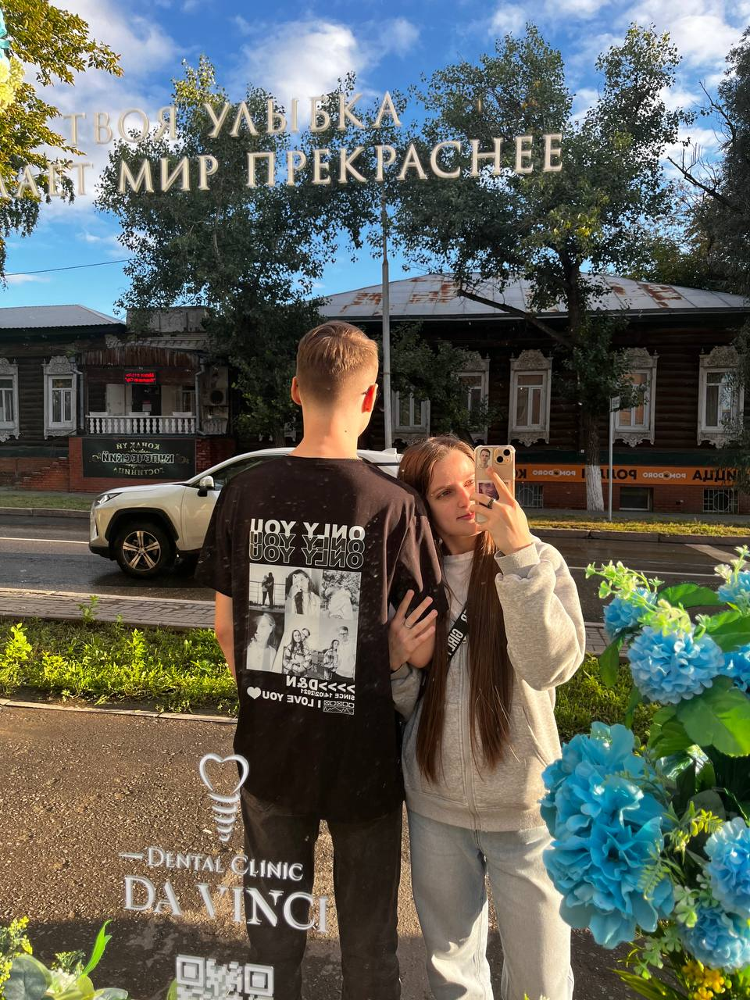
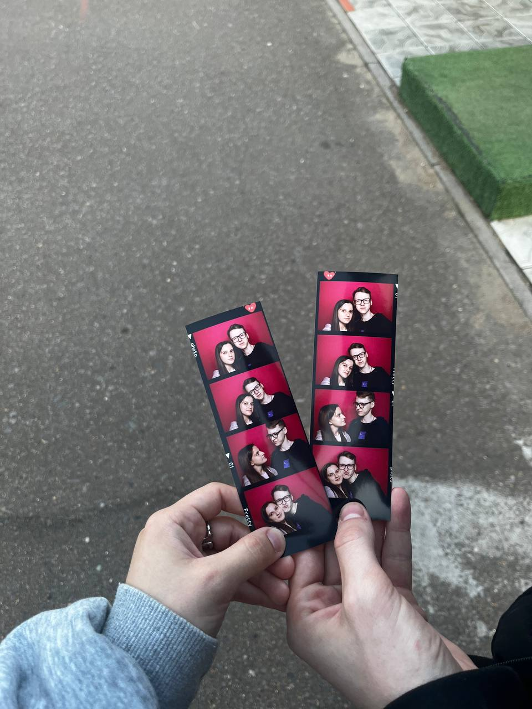
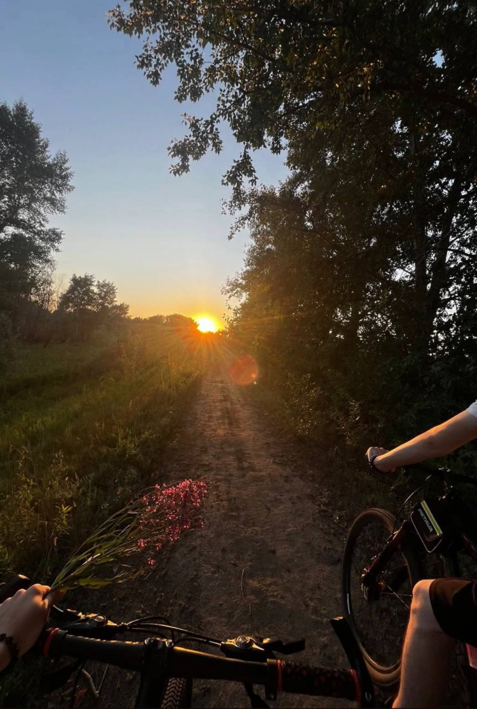
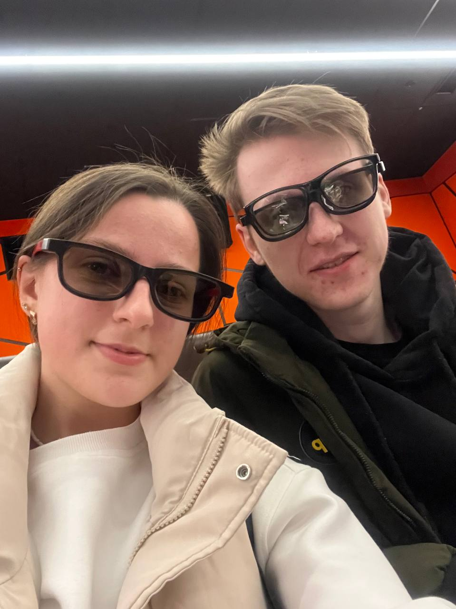

Пятый год — это не конец, а новое начало. Мы прошли путь от первых встреч
до полного понимания, от робких шагов до уверенного полёта. Впереди — целая жизнь,
и каждый день с тобой — это подарок.
1826+
дней вместе
∞
впереди
5
лет любви
Наши мгновения
Кадры нашей общей истории

Теплые воспоминания

Фотобудка
Солнечные воспоминания

Природа

Киновечер
Наша история 2025-26
Моё выступление
Тот момент, когда я взял микрофон и пел для тебя...
Я никогда не считал себя певцом. Но в день своего рождения почему-то захотелось спеть именно эту песню. Ты смотрела на меня из зала, улыбалась и подпевала. В тот момент я чувствовал себя рок-звездой. Не из-за микрофона и сцены, а из-за твоего взгляда.
Вопрос: Какую песню я пел в микрофон на моё др?
Тот самый концерт
Мы долго ждали этой встречи, и оно того стоило...
Я помню, как ты стояла я на набережной и смотрела концерт музыкантов, а я хотел с тобой тоже побывать и после работы я мчался к тебе пробираясь сквозь пробки и толпу. И я успеваю прийти к тебе в тот самый момент когда начинает петь наш любимый исполнитель.
Вопрос: На каком запоминающемся концерте мы с тобой побывали?
Твоё тёплое воспоминание
Что в этом году запомнилось тебе больше всего?
У каждого из нас есть моменты, которые греют сердце. Я помню свои, но мне очень важно знать твои. Расскажи мне о самом хорошем событии этого года. Всё, что ты напишешь, будет правильным. Потому что это твои чувства.
Вопрос: Напиши какое хорошее событие ты запомнила в этом году?
Твоё пожелание
Что ты хочешь пожелать нам в будущем?
Пять лет — это только начало. Впереди у нас ещё столько всего: свадьба, дети, дом, путешествия, старость на веранде. Но самое главное — чтобы мы всегда оставались друг у друга.
Вопрос: Что бы ты хотела пожелать нашим отношениям на будущее?
Самый главный вопрос
Я знаю ответ, но мне так важно услышать его снова...
Любовь нельзя измерить в километрах, днях или граммах. Но если бы можно было — у нас было бы бесконечно много. Ты — моя бесконечность. А я — твоя?
Вопрос: На сколько ты любишь меня?
Финальный код
Ты прошла почти весь путь. Осталось ответить на 5 вопросов 2025 года,
чтобы получить финальную цифру и завершить наше путешествие.
?
Финальная цифра
Главный код доступа
5
2
3
4
5
Это твой главный приз! Введи этот код на главной странице.